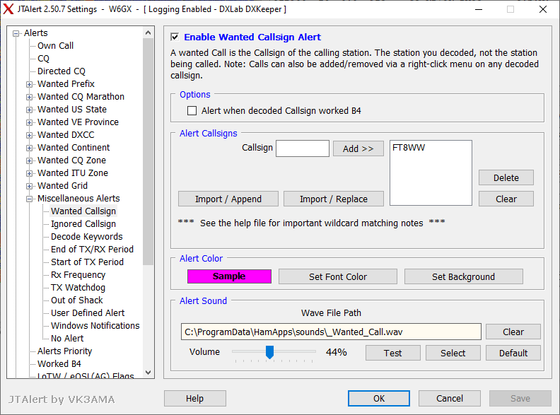

JTAlert allows you to set up a wanted call. You can add as many specific calls as you want. It'll also alert you when a new band country is decoded.Best Regards,Jonathan Woo, W6GX
On Wed, Feb 22, 2023 at 6:25 PM Al N6TA via Chat <chat@ncdxc.org> wrote:OK, so I am still a novice with FT8. I seem to make contacts but sometimes it is a hassle._______________________________________________I am looking for the 3C3CA and do not see him flying by on the constantly scrolling activity pane.There must be a program that makes this more manageable. Maybe by sorting, or flagging selected callsigns or something to simplify.You guys must be using something now that you are out of the Novice class. Tips welcomed. I am going to learn about JT Alert next.73,Al N6TA
Chat mailing list
Chat@ncdxc.org
http://mail.ncdxc.org/mailman/listinfo/chat_ncdxc.org